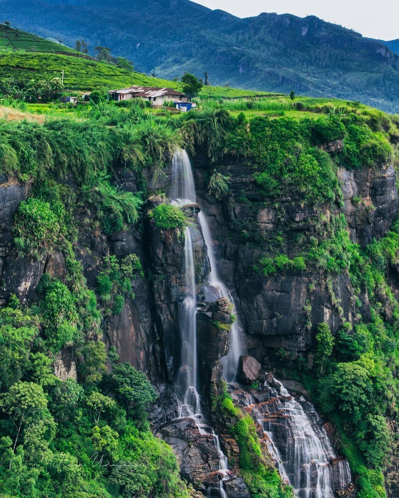
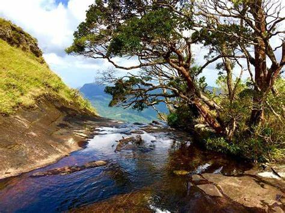
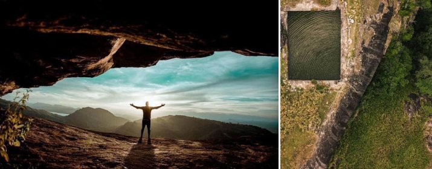

Hiking Experiences in SriLanka
 1.Gerandi Ella
Kalugala Gerandi Ella Waterfall is situated in Kalugala in the Kandy district. It stands at a massive height of 240 meters.Gerandi Ella or Gerandigini Ella creates a beautiful sceneries early in the morning and the late evening with misty conditions. Sometimes sunrise and the sunset is not clearly visible. View point is the peak and the starting point of the Gerandi Ella. Temperature is little bit low at the peak.
2.Nuwaragala Mountain

Nuwaragala is an ancient fortress and monastery which is situated along the Mahiyangane-Dimbulagala-Dalukkane Highway in Ampara. A paved pathway made of stone leads to the top of the mountain and to a large cave, which can easily house about 150 persons.

3.Sripada Peak Wilderness Sanctuary
This is the place where left footprint left behind when lord buddha visited sri lanka.There are possible 6 trails. Rathnapura - Palabaddala, Hatton - Nallathanni, Kuruwita - Erathne, Murraywatte, Mookuwatte and malimboda. Trail season will start from december to april.woth to visit this beautiful place.
4.Alagalla Mountain Range

Alagalla Mountain Range is situated at the boundaries of the Central and Sabaragamuwa Provinces in Sri Lanka. Along with the surrounding Bathalegala also known as Bible Rock, Uthuwankanda , Devanagala , Ambuluwawa, Knuckles Mountain Range and Hanthana Mountain Range, Alagalla mountain has served as a natural defense location for nearly five centuries (1505-1948) against the Portuguese, Dutch and English invasions aimed at the Kandyan Kingdom.

5.Bathalegala
Bible rock / Punchi Sigiriya / Bathalegala is a mountain range with a height of 2780 feet above sea level, located in Kegalle Aranayaka area. It is popular due to its easy climbing and natural beauty of the ecosystem. When you reach the top, you will be able to see a large area spread over Uthuankanda, Alagalla, Urakanda, Ambuluawa, Samasara Kanda as well as Kegalle, Mawanella, Gampala, Kadugannawa areas. Bathalegala is a suitable place for night camping ,and it is customary to get permission from the temple.
6.Belumgala View Point

This place is a viewpoint. This viewpoint is located in Aranayaka Dothal Oya road. The view of the sun rising is more attractive at here. You are able to see asupini falls, Ambuluwawa Tower, rahala gala and many the mountains from here.